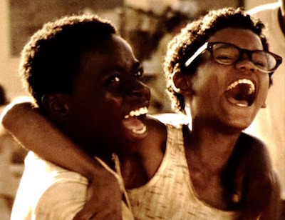
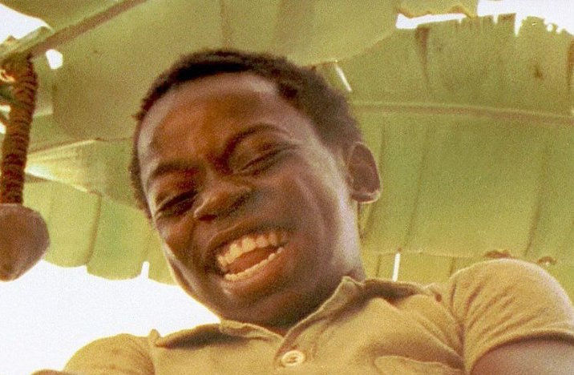
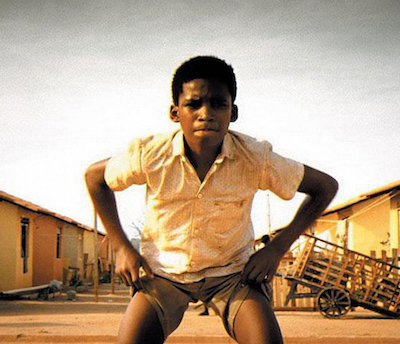

"Benny"
His personality? Confident and level-headed. He is easily the coolest guy in the City of God, just like they say. He is also probably the nicest. Benny has saved countless lives by talking Lil Ze out of killing people, that must count for something. He is devoted to his friends and his lover, Anjelica, and although he is faced with some tough choices, he tries to remain as righteous as a hood can.
"Li'l Ze"
One of the most powerful people in the City of God, a slum in Rio de Janeiro. Lil Z controls a large portion of the drug trade in his favela – and if it wasn’t for Carrot, a rival drug dealer, Lil Z would be the only drug lord aroundPersonality, pure evil. He kills and engages in just about every criminal activity imaginable. His only redeeming characteristic is his love for his best friend Benny, but that might end up doing Benny more harm than good.
"Rocket"
Just like a rose in the concrete, the hero of this story is one who differs immensely from the others in the toxic environment. Rocket learned from his brother Goose about the good, bad, and ugly of being a poor hoodlum in the City of God. An aspiring photojournalist, Rocket’s intelligence and ambition to get out sets him apart in the place where he grew up. Although he’s as much a product of the City of God as any hood, he’s able to stand back and view it through a distant lens. Rocket analyzes the benefits and detriments of a life of crime, and this insight ends up being his ticket to escape.